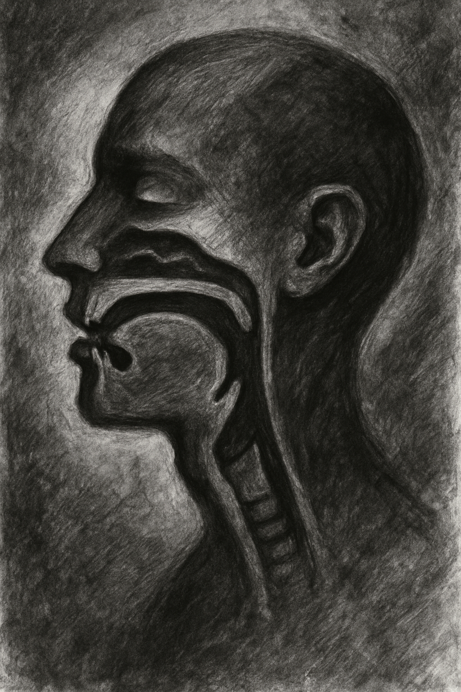
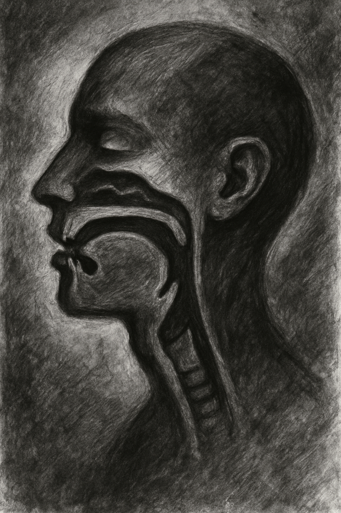
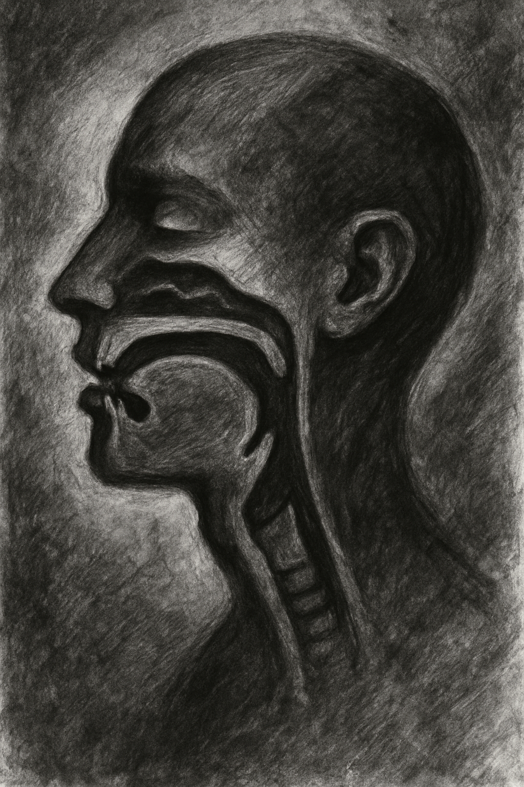

Human vocal tract consists of several muscles working together to produce sound. Thanks to varying combinations of muscles involved in the production of any particular sound, sound segments have different features. Now many of the features are simply binary. For example, humans sometimes employ their vocal cords to produce sounds like /g/ or /d/ but "turn them off" to produce sounds like /k/ or /t/. Ans so, /g/ and /d/ share the value for a feature named "voice", where the value for /g/ and /d/ is 1 (or +)—while for /k/ and /t/ it is 0 (or -).

This is actually a complex question. First of, some features are non-binary. For instance, one cannot "turn on" or "turn off" their place of articulation. There simply are more than two places in the tract where specific sound segments are produced. For instance, sounds like /p/ or /m/ are articulated at lips, /t/ or /l/ at the front of the mouth, and /k/ and /ŋ/ at the back of the tongue. This is where we can capitalise on the finiteness: because there is a constant number of places of articulation, we can simply make them a feature each and only mark one as operative. By this definition, every sound can have up to 25 binary features!
It is not 252, sorry to disappoint! First, not all features always specify a sound. Sometimes a feature just doesn't matter for a production of a particular sound, and the position in the vector would therefore be neither 0 nor one but rather something as a "null". (An attentive reader may notice that this means the vector is not exactly binary. A simple workaround is to have two equal length specification vectors instead: one to specify which features are active and one to specify the now properly binary value of active features.) For instance, when producing the sound /n/, all air comes out through the nose, and so any feature that has to do with the position of the tongue or lips, such as [rnd] for lip rounding, will remain unspecified. Another hurdle is that not all features are completely independent. For instance, different kinds of vowels can be specified around the position of the tongue—i.e. [high] or [low]. However, when the tongue is positioned high, it cannot at the same time be positioned low. At the same time, not positioning the tongue high does not necessarily imply positioning it low—it can be positioned in the middle—and so both features are still necessary to specify the sound.
So, the question remaing why try so hard to specify sound segments as vectors of binary value. This is because sounds that share values for specific features form classes. For instance /p/, /k/, and /t/ are all "voiceless" and /b/, /g/, and /d/ are "voiced". Different classes of sounds tend to behave alike in different phonological environments. For instance /p/, /k/, and /t/—but not /b/, /g/, and /d/— get aspirated (pronounced with a little bit of an extra air) at the beginning of syllables (cf. /pump/ versus /bump/). Binary vectors allow us to extract features sound segments have in common and identify classes more neatly.
Let me demonstrate the problem on a simple set of vectors of only 3 values. Consider 3 binary vectors representing sound segments A, B, and C such that A=[1,0,0], B=[0,1,1], and C=[1,0,1]. Say that you see segments B and C behaving alike in a certain sounds environments. Now notice that vectors B and C, but not A, share a value for the third feature. This means that it is likely the third feature that conditions the observed behaviour—simply because when this value changes, the observed behaviour changes too! We say that the third feature is the "minimum feature specification" of segments B and C in a sound inventory consisting of A, B, and C. You can also work this problem the other way around: suppose